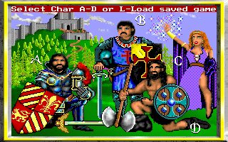
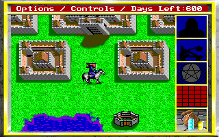
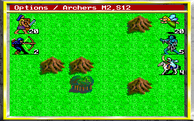

名稱：御封戰將／魔杖戰役／權杖風雲／國王的恩賜 (King's Bounty，英文版)
簡介：New World Computer 1990年出品的戰略遊戲，台灣由智冠、精訊、新世界各自以不同
名稱代理進口 [待補]。



保護：手冊密碼，破解碼：
KB.EXE
4E 8B DF AC 99 72 05 (原始版)
-- -- -- -- -- EB --
檔案：kb-new.rar = 另一版本，版本別不明，似乎較新